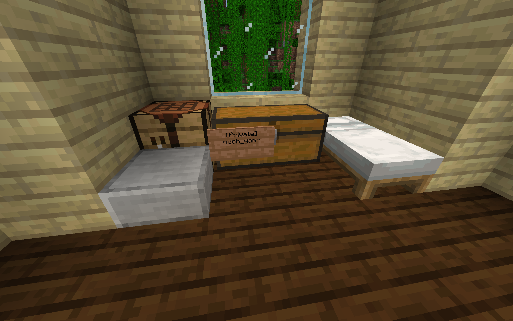
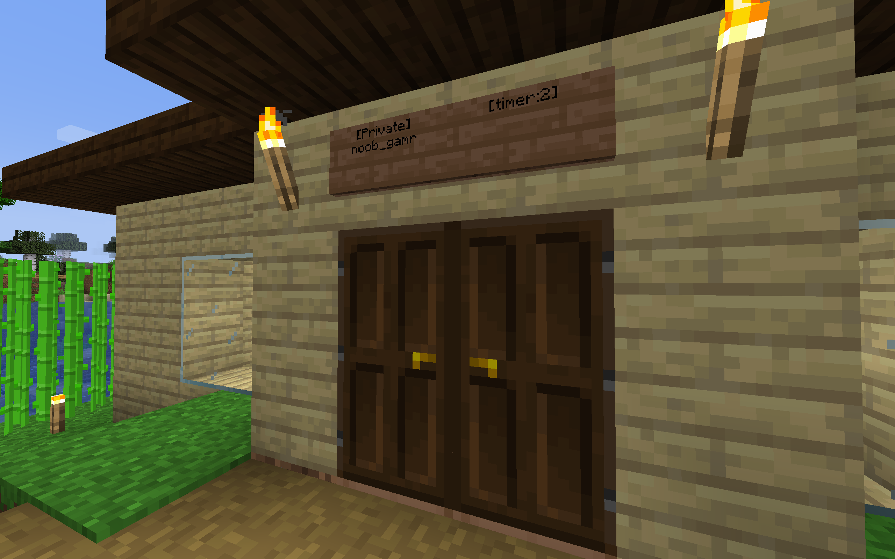

WorldGuard will stop others from interacting with your base. This means that it would be virtually impossible for an unauthorized player to grief the area.
False. You will additionally be given the option to disable pvp, tnt damage, flint and steel, block trampling, snow and ice control among other things.
Although I am a strong believer in freedom and equality, due to the fact that chests were immediately looted once we swithced the protection plugin, I am not trusing players with claiming plots without admin intervention. This means that you will have to contact noob_gamr for your base protected. Other trusted mods may be added in future to allow for faster plot claiming and protection.
Due to the time difference, mods and admins may not always be online, meaning that it could take up to 24 hours for changes to be approved and applied. However, there are things you could do to make the WorldGuard more secure.
In order for the WorldGuard to fully block players, make sure there aren't any structures for other players to climb onto and absail down into your base. Although WorldGuard would stop them from breaking or placing blocks in your base, they may be stuck in your base, which would be quite awkward in my opinion. I also recommend blocking players from entering at all, as it just gives them more of a chance to steal from you.

This should be common sense, but some don't. PLEASE REMEMBER TO LOCK YOUR CHESTS. A mod/admin will not return your items if they were left in an unlocked vanilla chest.
This is similar to closing off your base, but it is essential to security to lock your door. I have no doubt that a lot of potential robbers would be more enticed if he came across an unlocked door. So, please lock your doors.
